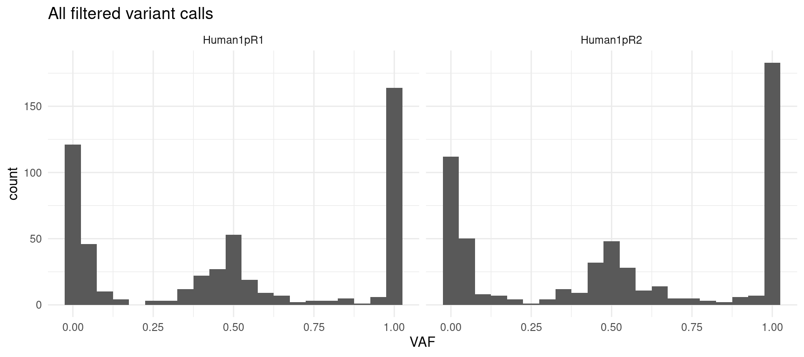

Human spike-in experiments
Last updated: 2023-08-23
Checks: 7 0
Knit directory: G000204_duplex/
This reproducible R Markdown analysis was created with workflowr (version 1.7.0). The Checks tab describes the reproducibility checks that were applied when the results were created. The Past versions tab lists the development history.
Great! Since the R Markdown file has been committed to the Git repository, you know the exact version of the code that produced these results.
Great job! The global environment was empty. Objects defined in the global environment can affect the analysis in your R Markdown file in unknown ways. For reproduciblity it’s best to always run the code in an empty environment.
The command set.seed(20210916) was run prior to running
the code in the R Markdown file. Setting a seed ensures that any results
that rely on randomness, e.g. subsampling or permutations, are
reproducible.
Great job! Recording the operating system, R version, and package versions is critical for reproducibility.
Nice! There were no cached chunks for this analysis, so you can be confident that you successfully produced the results during this run.
Great job! Using relative paths to the files within your workflowr project makes it easier to run your code on other machines.
Great! You are using Git for version control. Tracking code development and connecting the code version to the results is critical for reproducibility.
The results in this page were generated with repository version 603ddbc. See the Past versions tab to see a history of the changes made to the R Markdown and HTML files.
Note that you need to be careful to ensure that all relevant files for
the analysis have been committed to Git prior to generating the results
(you can use wflow_publish or
wflow_git_commit). workflowr only checks the R Markdown
file, but you know if there are other scripts or data files that it
depends on. Below is the status of the Git repository when the results
were generated:
Ignored files:
Ignored: .DS_Store
Ignored: .Rapp.history
Ignored: .Rhistory
Ignored: .Rproj.user/
Ignored: analysis/.DS_Store
Ignored: analysis/cache/
Ignored: data/.DS_Store
Untracked files:
Untracked: ._.DS_Store
Untracked: ._rare-mutation-detection.Rproj
Untracked: DOCNAME
Untracked: analysis/._.DS_Store
Untracked: analysis/._ecoli_spikeins.Rmd
Untracked: analysis/calc_nanoseq_metrics.Rmd
Untracked: data/._.DS_Store
Untracked: data/._metrics.rds
Untracked: data/ecoli/
Untracked: data/ecoli_k12_metrics.rds
Untracked: data/human_mixture_capture_region.bed
Untracked: data/human_mixture_pileup
Untracked: data/human_mixture_refs
Untracked: data/human_mixture_vars
Untracked: data/metadata/
Untracked: data/metrics_efficiency_nossc.rds
Untracked: data/metrics_spikeins.rds
Untracked: data/mixtures
Untracked: data/natasha_anstee_metrics.rds
Untracked: data/ref/
Untracked: drop_out_rate.pdf
Untracked: efficiency.pdf
Untracked: prototype_code/
Untracked: scripts/
Untracked: stats.csv
Unstaged changes:
Modified: analysis/model.Rmd
Note that any generated files, e.g. HTML, png, CSS, etc., are not included in this status report because it is ok for generated content to have uncommitted changes.
These are the previous versions of the repository in which changes were
made to the R Markdown (analysis/human_mixtures.Rmd) and
HTML (docs/human_mixtures.html) files. If you’ve configured
a remote Git repository (see ?wflow_git_remote), click on
the hyperlinks in the table below to view the files as they were in that
past version.
| File | Version | Author | Date | Message |
|---|---|---|---|---|
| Rmd | 603ddbc | mcmero | 2023-08-23 | SNV pileup analysis |
| html | 3c535f7 | mcmero | 2023-08-21 | Build site. |
| Rmd | cb969b1 | mcmero | 2023-08-21 | Fixed INDEL/N filtering from NVC output |
| html | 603da1a | mcmero | 2023-08-08 | Build site. |
| Rmd | 0c24851 | mcmero | 2023-08-08 | Added human mixture variant analysis |
Human samples are duplicate of 1% spike-in of 8393 (son of Chinese ancestry HG-005) in 8391 (son of Eastern European Ashkenazi Jewish ancestry HG-0020). Reference.
library(ggplot2)
library(data.table)
library(dplyr)
library(here)
library(tibble)
library(stringr)
library(Rsamtools)
library(GenomicRanges)
library(seqinr)
library(parallel)
library(readxl)
library(patchwork)
library(RColorBrewer)
library(UpSetR)
library(vcfR)
library(R.utils)
library(knitr)source(here("code/load_data.R"))
source(here("code/plot.R"))
source(here("code/efficiency_nanoseq_functions.R"))variant_dir <- here("data/human_mixture_vars")
pileup_dir <- here("data/human_mixture_pileup")
region_bed <- here("data/human_mixture_capture_region.bed")
hg002_var_file <- here("data/human_mixture_refs/HG002_GRCh38_1_22_v4.2.1_benchmark.vcf.gz")
hg005_var_file <- here("data/human_mixture_refs/HG005_GRCh38_1_22_v4.2.1_benchmark.vcf.gz")sample_names <- c("Human1pR1", "Human1pR2")
# load variant data
var_df <- load_variants(variant_dir, sample_names)
hg002_vars <- read.vcfR(hg002_var_file, verbose = FALSE)
hg005_vars <- read.vcfR(hg005_var_file, verbose = FALSE)
hg002v <- data.frame(hg002_vars@fix)
hg005v <- data.frame(hg005_vars@fix)
# get capture regions
regions <- read.delim(region_bed, sep = "\t", header = FALSE)
grx <- GRanges(seqnames = regions$V1,
ranges = IRanges(start = regions$V2, end = regions$V3))Variant Upset plot
Here we remove any “N” variant calls and INDELs and compare the overlaps for on- and off-target variant calls.
# remove any N calls and INDELs
var_df <- filter(var_df, ALT != "N") %>%
filter(., (REF %>% str_split("") %>% lapply(., length) %>% unlist) == 1) %>%
mutate(ALT = lapply(ALT, filter_out_indels) %>% as.character()) %>%
filter(., (ALT %>% str_split("") %>% lapply(., length) %>% unlist) == 1)
# filter out off-target reads
vrx <- GRanges(seqnames = var_df$CHROM,
ranges = IRanges(start = as.numeric(var_df$POS),
end = as.numeric(var_df$POS) + 1))
var_df$on_target <- overlapsAny(vrx, grx)
# calculate vafs
alt_dep <- apply(var_df, 1, get_alt_dep_nvc) %>% t() %>% data.frame()
var_df$AC <- alt_dep$X1
var_df$DP <- alt_dep$X2
var_df$VAF <- var_df$AC / var_df$DP
# make upsetplot
ulist <- NULL
for(sample in sample_names) {
ont_ids <- var_df[var_df$sample %in% sample & var_df$on_target,]$id
oft_ids <- var_df[var_df$sample %in% sample & !var_df$on_target,]$id
ulist[[paste(sample, "on_target")]] <- ont_ids
ulist[[paste(sample, "off_target")]] <- oft_ids
}
upset(fromList(ulist), order.by="freq", nsets=4)
Checking on-target rate from the bam files (based on reads that fall
within the region using
samtools view -c -L <region_bed> <consensus_bam>)
yields a higher on-target rate than the variant analysis would
suggest:
Human1pR1 Human1pR2
capture_region 188409 122466
total_reads 330368 233768
on_target 0.5703 0.5239Variant allele frequencies
Here we plot the allelic frequencies per-replicate in three plots:
- all filtered variant calls: no frequency or target filtering
- on-target variant calls: only on-target variant calls (in capture region)
- VAF-filtered on-target variant calls: all on-target variants under <0.3% VAF
ggplot(var_df, aes(VAF)) +
geom_histogram(binwidth = 0.05) +
facet_grid(~sample) +
theme_minimal() +
ggtitle("All filtered variant calls")
ggplot(var_df[var_df$on_target,], aes(VAF)) +
geom_histogram(binwidth = 0.05) +
facet_grid(~sample) +
theme_minimal() +
ggtitle("On-target variant calls")
ggplot(var_df[var_df$on_target & var_df$VAF < 0.3,], aes(VAF)) +
geom_histogram(binwidth = 0.01) +
facet_grid(~sample) +
theme_minimal() +
ggtitle("On-target variant calls < 0.3 VAF")
Variant comparison
Given the referene information, we check how many SNPs are present in the capture area. We also filter out any variants that are common between the two samples (if the same variant appears in both samples, we can”t differentiate the calls without some kind of phasing).
# filter out any INDELs
hg005v <- filter(hg005v, (ALT %>% str_split("") %>% lapply(., length) %>% unlist) == 1) %>%
filter(., (REF %>% str_split("") %>% lapply(., length) %>% unlist) == 1)
# construct Granges for hg005 SNPs and keep only SNPs in capture area
hg5x <- GRanges(seqnames = hg005v$CHROM,
ranges = IRanges(start = as.numeric(hg005v$POS),
end = as.numeric(hg005v$POS) + 1),
variant = hg005v$ALT)
hg5x <- hg5x[overlapsAny(hg5x, grx) %>% suppressWarnings()]
# construct Granges for hg002
hg2x <- GRanges(seqnames = hg002v$CHROM,
ranges = IRanges(start = as.numeric(hg002v$POS),
end = as.numeric(hg002v$POS) + 1),
variant = hg002v$ALT)
# check variants that overlap, we will keep these if they call a different base
unique_vars <- hg5x[overlapsAny(hg5x, hg2x)]$variant != hg2x[overlapsAny(hg2x, hg5x)]$variant
hg5x <- c(hg5x[!overlapsAny(hg5x, hg2x)], hg5x[overlapsAny(hg5x, hg2x)][unique_vars])
kable(hg5x)| seqnames | start | end | width | strand | variant |
|---|---|---|---|---|---|
| chr1 | 114714012 | 114714013 | 2 | * | G |
| chr3 | 128486108 | 128486109 | 2 | * | T |
| chr5 | 177516672 | 177516673 | 2 | * | T |
| chr9 | 5069837 | 5069838 | 2 | * | A |
| chr10 | 87970403 | 87970404 | 2 | * | T |
| chr11 | 32396399 | 32396400 | 2 | * | C |
| chr11 | 64805130 | 64805131 | 2 | * | A |
| chr11 | 64810148 | 64810149 | 2 | * | C |
| chr17 | 7676301 | 7676302 | 2 | * | T |
kable(var_df[var_df$POS %in% start(hg5x) & var_df$CHROM %in% seqnames(hg5x),])| CHROM | POS | ID | REF | ALT | QUAL | FILTER | INFO | FORMAT | Sample1 | sample | id | on_target | AC | DP | VAF | |
|---|---|---|---|---|---|---|---|---|---|---|---|---|---|---|---|---|
| 146 | chr5 | 177516672 | NA | C | T | NA | NA | AC=2;AF=0.0104712041885 | GT:AC:AF:NC | 0:2:0.0104712041885:C=189,T=2, | Human1pR1 | chr5_177516672 | TRUE | 2 | 191 | 0.0104712 |
| 261 | chr10 | 87970403 | NA | C | T | NA | NA | AC=2;AF=0.00393700787402 | GT:AC:AF:NC | 0:2:0.00393700787402:C=506,T=2, | Human1pR1 | chr10_87970403 | TRUE | 2 | 508 | 0.0039370 |
| 295 | chr11 | 32396399 | NA | T | C | NA | NA | AC=4;AF=0.0121951219512 | GT:AC:AF:NC | 0:4:0.0121951219512:C=4,T=324, | Human1pR1 | chr11_32396399 | TRUE | 4 | 328 | 0.0121951 |
| 527 | chr1 | 114714012 | NA | A | T | NA | NA | AC=5,2;AF=0.0505050505051,0.020202020202 | GT:AC:AF:NC | 0:5,2:0.0505050505051,0.020202020202:A=92,T=2,N=5, | Human1pR2 | chr1_114714012 | TRUE | 2 | 99 | 0.0202020 |
| 590 | chr3 | 128486108 | NA | C | T | NA | NA | AC=3;AF=0.0260869565217 | GT:AC:AF:NC | 0:3:0.0260869565217:C=112,T=3, | Human1pR2 | chr3_128486108 | TRUE | 3 | 115 | 0.0260870 |
| 832 | chr11 | 32396399 | NA | T | C | NA | NA | AC=3;AF=0.0125 | GT:AC:AF:NC | 0:3:0.0125:C=3,T=237, | Human1pR2 | chr11_32396399 | TRUE | 3 | 240 | 0.0125000 |
As a sanity check, bcftools v1.17 mpileup was run on the bam files no BAQ and min base Q of 0. Below are the VAFs for the consensus bam variants:
h1mp_cons <- read.vcfR(file.path(pileup_dir, "Human1pR1_pileup.vcf"),
verbose = FALSE)
h2mp_cons <- read.vcfR(file.path(pileup_dir, "Human1pR2_pileup.vcf"),
verbose = FALSE)
h1mp_cons <- data.frame(h1mp_cons@fix) %>% cbind(., data.frame(h1mp_cons@gt))
h2mp_cons <- data.frame(h2mp_cons@fix) %>% cbind(., data.frame(h2mp_cons@gt))
h1mp_cons$ID <- paste(h1mp_cons$CHROM, h1mp_cons$POS, sep = "_")
h2mp_cons$ID <- paste(h2mp_cons$CHROM, h2mp_cons$POS, sep = "_")
hg5x$ID <- paste(seqnames(hg5x), start(hg5x), sep = "_")
h1mp_cons <- h1mp_cons[h1mp_cons$ID %in% hg5x$ID,] %>% distinct()
h2mp_cons <- h2mp_cons[h2mp_cons$ID %in% hg5x$ID,] %>% distinct()
h1mp_cons$VAF <- apply(h1mp_cons, 1, get_variant_fraction, hg5x)
h2mp_cons$VAF <- apply(h2mp_cons, 1, get_variant_fraction, hg5x)
kable(h1mp_cons)| CHROM | POS | ID | REF | ALT | QUAL | FILTER | INFO | FORMAT | Human1pR1_HJ7VFDSX7_GTGAAGTG.GAGCAATC_L002 | VAF |
|---|---|---|---|---|---|---|---|---|---|---|
| chr1 | 114714012 | chr1_114714012 | A | T,<*> | 0 | NA | DP=139;I16=128,3,0,8,7860,471600,74,3628,7860,471600,480,28800,2981,71929,62,690;QS=0.992424,0.00757576,0;VDB=0.000156924;SGB=-0.651104;RPBZ=-4.70428;MQBZ=0;MQSBZ=0;BQBZ=-10.9469;SCBZ=0;MQ0F=0 | PL:AD | 0,255,255,255,255,255:131,1,0 | 0.0000000 |
| chr10 | 87970403 | chr10_87970403 | C | T,<*> | 0 | NA | DP=508;I16=241,265,1,1,30360,1.8216e+06,120,7200,30360,1.8216e+06,120,7200,9855,224105,26,626;QS=0.996063,0.00393701,0;VDB=0.7;SGB=-0.453602;RPBZ=1.29364;MQBZ=0;MQSBZ=0;BQBZ=0;SCBZ=0;MQ0F=0 | PL:AD | 0,255,255,255,255,255:506,2,0 | 0.0039370 |
| chr11 | 32396399 | chr11_32396399 | T | C,<*> | 0 | NA | DP=327;I16=145,179,3,0,19440,1.1664e+06,180,10800,19440,1.1664e+06,180,10800,6715,156443,75,1875;QS=0.990826,0.00917431,0;VDB=0.292464;SGB=-0.511536;RPBZ=0.32827;MQBZ=0;MQSBZ=0;BQBZ=0;SCBZ=0;MQ0F=0 | PL:AD | 0,255,255,255,255,255:324,3,0 | 0.0091743 |
| chr11 | 64805130 | chr11_64805130 | G | A,<*> | 0 | NA | DP=255;I16=150,103,0,2,15180,910800,62,3604,15180,910800,120,7200,4794,107560,14,106;QS=0.996063,0.00393701,0;VDB=0.98;SGB=-0.453602;RPBZ=0.00481312;MQBZ=0;MQSBZ=0;BQBZ=-11.2472;SCBZ=0;MQ0F=0 | PL:AD | 0,255,255,255,255,255:253,1,0 | 0.0039370 |
| chr11 | 64810148 | chr11_64810148 | G | <*> | 0 | NA | DP=74;I16=69,5,0,0,4412,263824,0,0,4440,266400,0,0,1479,33997,0,0;QS=1,0;MQ0F=0 | PL:AD | 0,223,255:74,0 | 0.0000000 |
| chr17 | 7676301 | chr17_7676301 | G | T,<*> | 0 | NA | DP=233;I16=104,128,0,1,13892,832624,60,3600,13920,835200,60,3600,4693,111063,25,625;QS=0.9957,0.00430046,0;SGB=-0.379885;RPBZ=-0.892202;MQBZ=0;MQSBZ=0;BQBZ=0.0656532;SCBZ=-0.375988;MQ0F=0 | PL:AD | 0,255,255,255,255,255:232,1,0 | 0.0042918 |
| chr3 | 128486108 | chr3_128486108 | C | <*> | 0 | NA | DP=171;I16=125,44,1,1,10140,608400,4,8,10140,608400,120,7200,3290,74914,26,626;QS=1,0;MQ0F=0 | PL:AD | 0,255,255:169,0 | 0.0000000 |
| chr5 | 177516672 | chr5_177516672 | C | T,<*> | 0 | NA | DP=191;I16=111,78,1,1,11312,677824,120,7200,11340,680400,120,7200,3941,92315,50,1250;QS=0.989503,0.0104969,0;VDB=0.66;SGB=-0.453602;RPBZ=0.0578716;MQBZ=0;MQSBZ=0;BQBZ=0.102869;SCBZ=0;MQ0F=0 | PL:AD | 0,255,255,255,255,255:189,2,0 | 0.0104712 |
| chr9 | 5069837 | chr9_5069837 | G | <*> | 0 | NA | DP=411;I16=262,149,0,0,24660,1.4796e+06,0,0,24660,1.4796e+06,0,0,8384,193948,0,0;QS=1,0;MQ0F=0 | PL:AD | 0,255,255:411,0 | 0.0000000 |
kable(h2mp_cons)| CHROM | POS | ID | REF | ALT | QUAL | FILTER | INFO | FORMAT | Human1pR2_HJ7VFDSX7_CATGGCTA.CACACATC_L002 | VAF |
|---|---|---|---|---|---|---|---|---|---|---|
| chr1 | 114714012 | chr1_114714012 | A | T,<*> | 0 | NA | DP=99;I16=88,4,0,7,5520,331200,130,7220,5520,331200,420,25200,1994,47390,29,169;QS=0.978723,0.0212766,0;VDB=0.000181347;SGB=-0.636426;RPBZ=-4.39045;MQBZ=0;MQSBZ=0;BQBZ=-8.27711;SCBZ=0;MQ0F=0 | PL:AD | 0,171,255,255,255,255:92,2,0 | 0.0000000 |
| chr10 | 87970403 | chr10_87970403 | C | T,<*> | 0 | NA | DP=359;I16=180,178,1,0,21480,1.2888e+06,60,3600,21480,1.2888e+06,60,3600,7182,165412,25,625;QS=0.997214,0.00278552,0;SGB=-0.379885;RPBZ=0.42945;MQBZ=0;MQSBZ=0;BQBZ=0;SCBZ=0;MQ0F=0 | PL:AD | 0,255,255,255,255,255:358,1,0 | 0.0027855 |
| chr11 | 32396399 | chr11_32396399 | T | C,<*> | 0 | NA | DP=240;I16=101,136,1,2,14220,853200,180,10800,14220,853200,180,10800,5067,118617,75,1875;QS=0.9875,0.0125,0;VDB=0.529687;SGB=-0.511536;RPBZ=0.14647;MQBZ=0;MQSBZ=0;BQBZ=0;SCBZ=0;MQ0F=0 | PL:AD | 0,255,255,255,255,255:237,3,0 | 0.0125000 |
| chr11 | 64805130 | chr11_64805130 | G | A,<*> | 0 | NA | DP=134;I16=75,58,1,0,7980,478800,60,3600,7980,478800,60,3600,2571,58357,7,49;QS=0.992537,0.00746269,0;SGB=-0.379885;RPBZ=1.38334;MQBZ=0;MQSBZ=0;BQBZ=0;SCBZ=0;MQ0F=0 | PL:AD | 0,255,255,255,255,255:133,1,0 | 0.0074627 |
| chr11 | 64810148 | chr11_64810148 | G | <*> | 0 | NA | DP=54;I16=46,8,0,0,3240,194400,0,0,3240,194400,0,0,1044,23184,0,0;QS=1,0;MQ0F=0 | PL:AD | 0,163,255:54,0 | 0.0000000 |
| chr17 | 7676301 | chr17_7676301 | G | T,<*> | 0 | NA | DP=180;I16=89,90,0,1,10740,644400,60,3600,10740,644400,60,3600,3798,89408,10,100;QS=0.994444,0.00555556,0;SGB=-0.379885;RPBZ=1.54957;MQBZ=0;MQSBZ=0;BQBZ=0;SCBZ=-0.352792;MQ0F=0 | PL:AD | 0,255,255,255,255,255:179,1,0 | 0.0055556 |
| chr3 | 128486108 | chr3_128486108 | C | T,<*> | 0 | NA | DP=115;I16=84,28,3,0,6720,403200,180,10800,6720,403200,180,10800,2125,48073,57,1139;QS=0.973913,0.026087,0;VDB=0.839668;SGB=-0.511536;RPBZ=-0.658166;MQBZ=0;MQSBZ=0;BQBZ=0;SCBZ=0;MQ0F=0 | PL:AD | 0,187,255,255,255,255:112,3,0 | 0.0260870 |
| chr5 | 177516672 | chr5_177516672 | C | <*> | 0 | NA | DP=127;I16=66,61,0,0,7620,457200,0,0,7620,457200,0,0,2635,60853,0,0;QS=1,0;MQ0F=0 | PL:AD | 0,255,255:127,0 | 0.0000000 |
| chr9 | 5069837 | chr9_5069837 | G | <*> | 0 | NA | DP=314;I16=184,130,0,0,18840,1.1304e+06,0,0,18840,1.1304e+06,0,0,6627,155741,0,0;QS=1,0;MQ0F=0 | PL:AD | 0,255,255:314,0 | 0.0000000 |
Below are the VAFs for the raw bam variants:
h1mp_raw <- read.vcfR(file.path(pileup_dir, "raw/Human1pR1_pileup.vcf"),
verbose = FALSE)
h2mp_raw <- read.vcfR(file.path(pileup_dir, "raw/Human1pR2_pileup.vcf"),
verbose = FALSE)
h1mp_raw <- data.frame(h1mp_raw@fix) %>% cbind(., data.frame(h1mp_raw@gt))
h2mp_raw <- data.frame(h2mp_raw@fix) %>% cbind(., data.frame(h2mp_raw@gt))
h1mp_raw$ID <- paste(h1mp_raw$CHROM, h1mp_raw$POS, sep = "_")
h2mp_raw$ID <- paste(h2mp_raw$CHROM, h2mp_raw$POS, sep = "_")
h1mp_raw <- h1mp_raw[h1mp_raw$ID %in% hg5x$ID,] %>% distinct()
h2mp_raw <- h2mp_raw[h2mp_raw$ID %in% hg5x$ID,] %>% distinct()
h1mp_raw$VAF <- apply(h1mp_raw, 1, get_variant_fraction, hg5x)
h2mp_raw$VAF <- apply(h2mp_raw, 1, get_variant_fraction, hg5x)
kable(h1mp_raw)| CHROM | POS | ID | REF | ALT | QUAL | FILTER | INFO | FORMAT | Human1pR1_HJ7VFDSX7_GTGAAGTG.GAGCAATC_L002 | VAF |
|---|---|---|---|---|---|---|---|---|---|---|
| chr1 | 114714012 | chr1_114714012 | A | T,C,G | 0 | NA | DP=2378;I16=1279,814,17,268,58892,2.04342e+06,3241,53669,125062,7.4859e+06,16455,965889,44345,1.04588e+06,5570,126562;QS=0.945924,0.0325317,0.0122472,0.00929706;VDB=0.951167;SGB=-0.693147;RPBZ=-6.80848;MQBZ=-3.22071;MQSBZ=-1.95439;BQBZ=-18.5457;SCBZ=8.01938;MQ0F=0.000420521 | PL:AD | 0,255,255,255,255,255,255,255,255,255:2093,191,73,21 | 0.0088310 |
| chr10 | 87970403 | chr10_87970403 | C | A,T,G | 0 | NA | DP=7819;I16=3717,3854,109,139,238893,9.18864e+06,3308,73484,453674,2.72003e+07,14591,868753,154278,3.56539e+06,4928,114654;QS=0.985996,0.00797969,0.00504496,0.000979604;VDB=0.919782;SGB=-0.693147;RPBZ=2.66365;MQBZ=-1.49661;MQSBZ=0.0801869;BQBZ=-16.6284;SCBZ=4.80631;MQ0F=0.000127894 | PL:AD | 0,255,255,255,255,255,255,255,255,255:7571,188,38,21 | 0.0048606 |
| chr11 | 32396399 | chr11_32396399 | T | C,A,G | 0 | NA | DP=5553;I16=2293,3120,103,37,179654,7.04057e+06,3156,102066,324202,1.9437e+07,8197,487841,114568,2.69134e+06,3132,75962;QS=0.982653,0.012653,0.0040769,0.00061722;VDB=0.0845183;SGB=-0.693147;RPBZ=-0.233849;MQBZ=-0.913227;MQSBZ=-0.0782107;BQBZ=-7.44466;SCBZ=1.47405;MQ0F=0 | PL:AD | 0,255,255,255,255,255,255,255,255,255:5413,67,60,11 | 0.0120699 |
| chr11 | 64805130 | chr11_64805130 | G | A,T,C | 0 | NA | DP=4358;I16=2409,1882,31,36,142568,5.51512e+06,1050,26306,256936,1.54053e+07,3916,233440,88208,2.05576e+06,1416,33540;QS=0.992565,0.00418323,0.00239535,0.000855975;VDB=0.320096;SGB=-0.693147;RPBZ=0.410199;MQBZ=-0.779995;MQSBZ=-0.281104;BQBZ=-8.23094;SCBZ=2.33746;MQ0F=0.000229463 | PL:AD | 0,255,255,255,255,255,255,255,255,255:4291,19,35,13 | 0.0043598 |
| chr11 | 64810148 | chr11_64810148 | G | C,T,<*> | 0 | NA | DP=843;I16=589,244,9,1,28948,1.06525e+06,214,6202,49888,2.98899e+06,600,36000,15283,339683,205,5025;QS=0.992678,0.00656949,0.000752754,0;VDB=0.517259;SGB=-0.670168;RPBZ=0.047697;MQBZ=0.348338;MQSBZ=-4.26096;BQBZ=-4.40035;SCBZ=0.50099;MQ0F=0 | PL:AD | 0,255,255,255,255,255,255,255,255,255:833,8,2,0 | 0.0094899 |
| chr17 | 7676301 | chr17_7676301 | G | T,C,A | 0 | NA | DP=3530;I16=1298,2167,16,49,113069,4.55887e+06,713,13305,206814,1.23788e+07,3783,222911,74360,1.76666e+06,1456,34806;QS=0.993328,0.00587403,0.000702802,9.54422e-05;VDB=0.0563998;SGB=-0.693147;RPBZ=0.0431235;MQBZ=-1.06911;MQSBZ=-0.565955;BQBZ=-9.52428;SCBZ=2.28313;MQ0F=0 | PL:AD | 0,255,255,255,255,255,255,255,255,255:3465,56,8,1 | 0.0158640 |
| chr3 | 128486108 | chr3_128486108 | C | T,A,G | 0 | NA | DP=3461;I16=1927,1471,40,23,113127,4.42568e+06,1155,32769,203473,1.21928e+07,3765,225101,67788,1.55613e+06,1346,31404;QS=0.989772,0.005465,0.0037848,0.000978677;VDB=0.0583748;SGB=-0.693147;RPBZ=1.6185;MQBZ=-0.321333;MQSBZ=-0.401551;BQBZ=-6.98816;SCBZ=1.45631;MQ0F=0 | PL:AD | 0,255,255,255,255,255,255,255,255,255:3398,19,34,9 | 0.0054913 |
| chr5 | 177516672 | chr5_177516672 | C | T,A,G | 0 | NA | DP=3518;I16=1997,1457,44,20,115800,4.43498e+06,1463,44079,206866,1.24004e+07,3737,221777,75292,1.7941e+06,1421,34423;QS=0.987627,0.00754921,0.00435857,0.000465478;VDB=0.0479845;SGB=-0.693147;RPBZ=2.98368;MQBZ=-0.781218;MQSBZ=0.275029;BQBZ=-5.31556;SCBZ=2.09774;MQ0F=0 | PL:AD | 0,255,255,255,255,255,255,255,255,255:3454,25,34,5 | 0.0071063 |
| chr9 | 5069837 | chr9_5069837 | G | T,A,C | 0 | NA | DP=5598;I16=3814,1579,138,67,168735,6.502e+06,2284,41542,322933,1.93601e+07,12194,727162,113627,2.66584e+06,4304,100780;QS=0.985848,0.0110098,0.00220659,0.000935778;VDB=0.0333858;SGB=-0.693147;RPBZ=3.25191;MQBZ=-0.69118;MQSBZ=0.161522;BQBZ=-16.4947;SCBZ=2.76591;MQ0F=0.000535906 | PL:AD | 0,255,255,255,255,255,255,255,255,255:5393,176,12,16 | 0.0021440 |
kable(h2mp_raw)| CHROM | POS | ID | REF | ALT | QUAL | FILTER | INFO | FORMAT | Human1pR2_HJ7VFDSX7_CATGGCTA.CACACATC_L002 | VAF |
|---|---|---|---|---|---|---|---|---|---|---|
| chr1 | 114714012 | chr1_114714012 | A | T,C,G | 0 | NA | DP=2169;I16=1259,707,12,191,56707,1.94058e+06,2356,34750,117234,7.00777e+06,11805,695233,41293,970483,4313,99021;QS=0.959398,0.0219532,0.0133034,0.00534498;VDB=0.227244;SGB=-0.693147;RPBZ=-5.67825;MQBZ=-2.17381;MQSBZ=-2.41906;BQBZ=-17.6354;SCBZ=8.93585;MQ0F=0 | PL:AD | 0,255,255,255,255,255,255,255,255,255:1966,113,73,17 | 0.0078377 |
| chr10 | 87970403 | chr10_87970403 | C | A,T,G | 0 | NA | DP=7908;I16=3827,3773,148,160,240875,8.63876e+06,4327,93611,454888,2.72553e+07,18114,1.07416e+06,155667,3.6211e+06,6449,150153;QS=0.982219,0.0120663,0.00471526,0.000999098;VDB=0.693789;SGB=-0.693147;RPBZ=2.24651;MQBZ=-1.78029;MQSBZ=-0.0471676;BQBZ=-20.5534;SCBZ=3.38189;MQ0F=0 | PL:AD | 0,255,255,255,255,255,255,255,255,255:7600,238,45,23 | 0.0056919 |
| chr11 | 32396399 | chr11_32396399 | T | C,A,G | 0 | NA | DP=5660;I16=2228,3298,78,56,186452,6.92944e+06,2767,79371,330678,1.98204e+07,7983,476705,117563,2.75273e+06,2988,70368;QS=0.985352,0.0101496,0.00310757,0.00139051;VDB=0.783816;SGB=-0.693147;RPBZ=-0.144853;MQBZ=-0.614132;MQSBZ=0.221435;BQBZ=-9.83269;SCBZ=2.39853;MQ0F=0 | PL:AD | 0,255,255,255,255,255,255,255,255,255:5526,59,50,23 | 0.0104277 |
| chr11 | 64805130 | chr11_64805130 | G | A,T,C | 0 | NA | DP=3916;I16=2008,1843,42,23,129841,4.87608e+06,1280,35080,230629,1.38301e+07,3840,228168,77102,1.78753e+06,1282,29582;QS=0.990301,0.00522913,0.00354427,0.000925912;VDB=0.76911;SGB=-0.693147;RPBZ=2.31656;MQBZ=-0.573209;MQSBZ=0.0288966;BQBZ=-7.56984;SCBZ=2.99803;MQ0F=0.000510725 | PL:AD | 0,255,255,255,255,255,255,255,255,255:3851,21,34,7 | 0.0053667 |
| chr11 | 64810148 | chr11_64810148 | G | C,T,<*> | 0 | NA | DP=676;I16=428,237,10,1,23176,854776,225,6323,39791,2.38279e+06,660,39600,11634,253154,230,5362;QS=0.990406,0.00818659,0.00140707,0;VDB=0.861107;SGB=-0.676189;RPBZ=-0.778572;MQBZ=0.365666;MQSBZ=-3.11839;BQBZ=-4.96894;SCBZ=0.0339176;MQ0F=0 | PL:AD | 0,255,255,255,255,255,255,255,255,255:665,8,3,0 | 0.0118343 |
| chr17 | 7676301 | chr17_7676301 | G | T,C,<*> | 0 | NA | DP=3166;I16=1115,1980,11,60,102575,3.81673e+06,1413,40473,184584,1.10418e+07,4119,242163,66203,1.5576e+06,1436,32344;QS=0.986287,0.0133975,0.000315799,0;VDB=0.531092;SGB=-0.693147;RPBZ=1.0634;MQBZ=-1.16002;MQSBZ=-0.543083;BQBZ=-6.83871;SCBZ=2.58645;MQ0F=0.000631712 | PL:AD | 0,255,255,255,255,255,255,255,255,255:3095,68,3,0 | 0.0214782 |
| chr3 | 128486108 | chr3_128486108 | C | T,A,G | 0 | NA | DP=3162;I16=1737,1339,65,21,103870,3.84005e+06,2004,60350,183941,1.10177e+07,5098,303330,61503,1.41556e+06,1741,39241;QS=0.981135,0.0149016,0.00292761,0.00103549;VDB=0.900481;SGB=-0.693147;RPBZ=-1.60971;MQBZ=-0.580684;MQSBZ=-0.562229;BQBZ=-6.6964;SCBZ=1.5936;MQ0F=0 | PL:AD | 0,255,255,255,255,255,255,255,255,255:3076,49,27,10 | 0.0154965 |
| chr5 | 177516672 | chr5_177516672 | C | T,A,G | 0 | NA | DP=3382;I16=1921,1418,33,10,112476,4.12708e+06,908,26062,199867,1.19788e+07,2547,151745,70651,1.65268e+06,1008,24242;QS=0.992032,0.00549653,0.00198755,0.000483695;VDB=0.170142;SGB=-0.693146;RPBZ=-0.726899;MQBZ=-0.431209;MQSBZ=0.285921;BQBZ=-5.5266;SCBZ=0.926467;MQ0F=0 | PL:AD | 0,255,255,255,255,255,255,255,255,255:3339,19,18,5 | 0.0056196 |
| chr9 | 5069837 | chr9_5069837 | G | T,A,C | 0 | NA | DP=5837;I16=3973,1612,183,69,173527,6.14438e+06,3110,47700,334288,2.00398e+07,15008,896888,118701,2.79869e+06,5467,127981;QS=0.982244,0.0155491,0.00162546,0.000581326;VDB=0.381863;SGB=-0.693147;RPBZ=6.07266;MQBZ=-0.579316;MQSBZ=0.155051;BQBZ=-20.229;SCBZ=2.41617;MQ0F=0.000171321 | PL:AD | 0,255,255,255,255,255,255,255,255,255:5585,230,12,10 | 0.0020559 |
sessionInfo()R version 4.3.0 (2023-04-21)
Platform: x86_64-pc-linux-gnu (64-bit)
Running under: CentOS Linux 7 (Core)
Matrix products: default
BLAS: /stornext/System/data/apps/R/R-4.3.0/lib64/R/lib/libRblas.so
LAPACK: /stornext/System/data/apps/R/R-4.3.0/lib64/R/lib/libRlapack.so; LAPACK version 3.11.0
locale:
[1] LC_CTYPE=en_US.UTF-8 LC_NUMERIC=C
[3] LC_TIME=en_US.UTF-8 LC_COLLATE=en_US.UTF-8
[5] LC_MONETARY=en_US.UTF-8 LC_MESSAGES=en_US.UTF-8
[7] LC_PAPER=en_US.UTF-8 LC_NAME=C
[9] LC_ADDRESS=C LC_TELEPHONE=C
[11] LC_MEASUREMENT=en_US.UTF-8 LC_IDENTIFICATION=C
time zone: Australia/Melbourne
tzcode source: system (glibc)
attached base packages:
[1] parallel stats4 stats graphics grDevices utils datasets
[8] methods base
other attached packages:
[1] knitr_1.43 R.utils_2.12.2 R.oo_1.25.0
[4] R.methodsS3_1.8.2 vcfR_1.14.0 UpSetR_1.4.0
[7] RColorBrewer_1.1-3 patchwork_1.1.2 readxl_1.4.3
[10] seqinr_4.2-30 Rsamtools_2.16.0 Biostrings_2.68.1
[13] XVector_0.40.0 GenomicRanges_1.52.0 GenomeInfoDb_1.36.1
[16] IRanges_2.34.1 S4Vectors_0.38.1 BiocGenerics_0.46.0
[19] stringr_1.5.0 tibble_3.2.1 here_1.0.1
[22] dplyr_1.1.2 data.table_1.14.8 ggplot2_3.4.2
[25] workflowr_1.7.0
loaded via a namespace (and not attached):
[1] ade4_1.7-22 tidyselect_1.2.0 viridisLite_0.4.2
[4] farver_2.1.1 bitops_1.0-7 fastmap_1.1.1
[7] RCurl_1.98-1.12 promises_1.2.0.1 digest_0.6.33
[10] lifecycle_1.0.3 cluster_2.1.4 processx_3.8.2
[13] magrittr_2.0.3 compiler_4.3.0 rlang_1.1.1
[16] sass_0.4.7 tools_4.3.0 utf8_1.2.3
[19] yaml_2.3.7 labeling_0.4.2 plyr_1.8.8
[22] BiocParallel_1.34.2 memuse_4.2-3 withr_2.5.0
[25] grid_4.3.0 fansi_1.0.4 git2r_0.32.0
[28] colorspace_2.1-0 scales_1.2.1 MASS_7.3-58.4
[31] cli_3.6.1 rmarkdown_2.23 vegan_2.6-4
[34] crayon_1.5.2 generics_0.1.3 rstudioapi_0.15.0
[37] httr_1.4.6 ape_5.7-1 cachem_1.0.8
[40] zlibbioc_1.46.0 splines_4.3.0 cellranger_1.1.0
[43] vctrs_0.6.3 Matrix_1.6-1 jsonlite_1.8.7
[46] callr_3.7.3 jquerylib_0.1.4 glue_1.6.2
[49] codetools_0.2-19 ps_1.7.5 stringi_1.7.12
[52] gtable_0.3.3 later_1.3.1 munsell_0.5.0
[55] pillar_1.9.0 htmltools_0.5.5 GenomeInfoDbData_1.2.10
[58] R6_2.5.1 pinfsc50_1.2.0 rprojroot_2.0.3
[61] evaluate_0.21 lattice_0.21-8 highr_0.10
[64] httpuv_1.6.11 bslib_0.5.0 Rcpp_1.0.11
[67] gridExtra_2.3 nlme_3.1-162 permute_0.9-7
[70] mgcv_1.8-42 whisker_0.4.1 xfun_0.39
[73] fs_1.6.3 getPass_0.2-2 pkgconfig_2.0.3